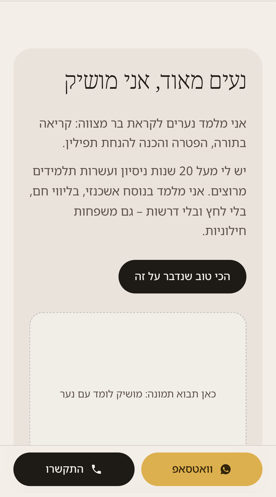
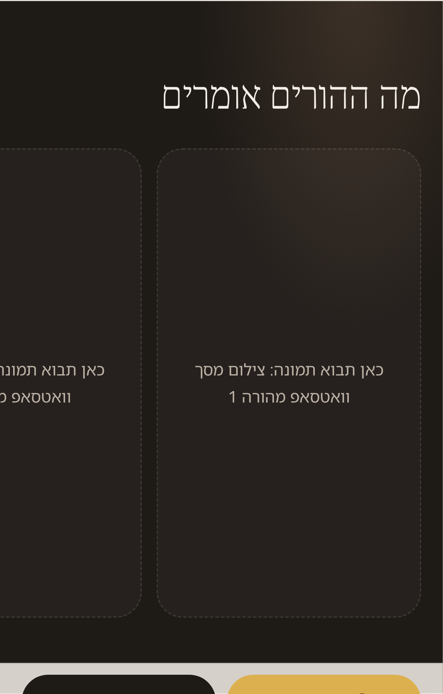
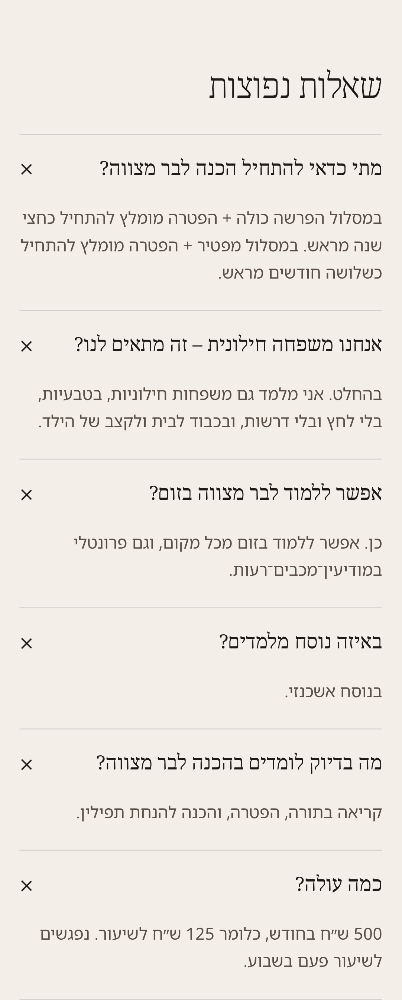
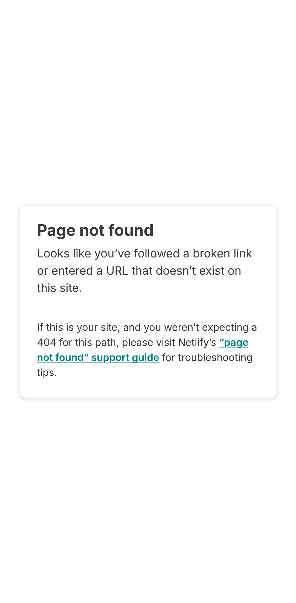
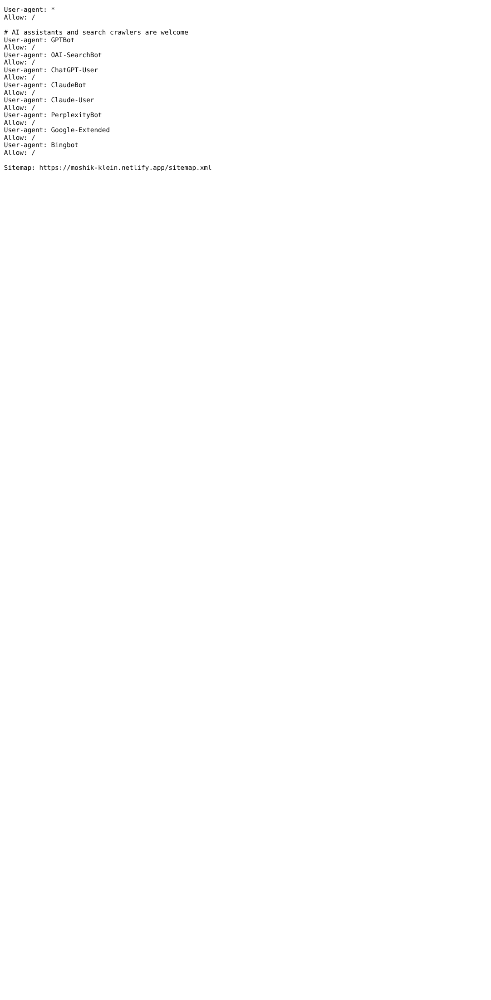
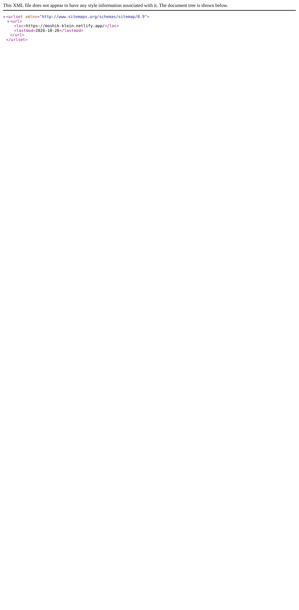
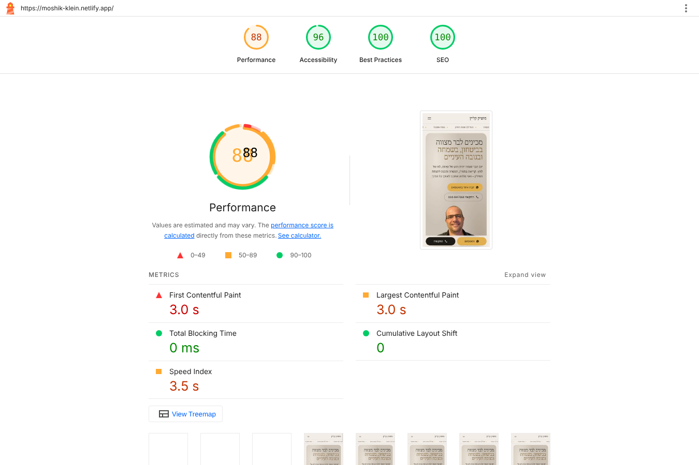

class="ph ph-shot").netlify.app, ב-sitemap יש כתובת אחת בלבד, ובעמוד כולו יש כ-525 מילים. לא קיים עמוד ייעודי לאף שאילתה (למשל "מורה לבר מצווה בזום", "לימוד הפטרה"). בסכמה גם אין sameAs שמקשר לפרופיל העסק בגוגל או לרשתות חברתיות.
fonts.googleapis.com חוסם את הצגת העמוד. Lighthouse מעריך חיסכון של עד 1.95 שנ׳, ו-FCP במובייל יצא 1.8–3.1 שנ׳. אפשר גם לחסוך כ-42KB בתמונות.
/index.html מחזיר 200 במקום הפניית 301 לכתובת הראשית (יש canonical, אבל עדיף להפנות).
Claude-SearchBot ו-Perplexity-User, ושניהם מופיעים בתיעוד הרשמי.
sameAs. להוסיף 2–3 עמודי תוכן ממוקדים (זום, הפטרה, משפחות חילוניות). אחר כך להריץ שוב את טבלת ה-AI ולהשוות.הוראות: הריצו כל פרומפט בחלון חדש בלי התחברות להיסטוריה. בכל תא רשמו: מוזכר? (מותג / נישה בלבד / לא), מקורות שצוטטו, ושפת התשובה ומשפט מייצג. צלמו מסך ושמרו בשם ai-P{מס׳}-{מנוע}.png. כדאי להריץ כל פרומפט פעמיים, כי התשובות משתנות.
| פרומפט | ChatGPT | Perplexity | Gemini |
|---|---|---|---|
| P1. מי ממליץ על מורה לבר מצווה במודיעין? | טרם הורץ | טרם הורץ | טרם הורץ |
| P2. איך בוחרים מורה לבר מצווה לקריאה בתורה? | טרם הורץ | טרם הורץ | טרם הורץ |
| P3. אפשר ללמוד לבר מצווה בזום? מי מלמד הפטרה אונליין? | טרם הורץ | טרם הורץ | טרם הורץ |
| P4. אנחנו משפחה חילונית, מי יכין את הבן שלנו לבר מצווה בלי לחץ דתי? | טרם הורץ | טרם הורץ | טרם הורץ |
| P5. כמה עולה מורה פרטי לבר מצווה ומתי צריך להתחיל? | טרם הורץ | טרם הורץ | טרם הורץ |
מה לחפש: האם מוזכר "מושיק קליין" או הדומיין. אם מוזכרים מתחרים, מי הם. אילו סוגי מקורות מצוטטים (מדריכים, פורומים, Google Maps, קבוצות פייסבוק). ב-P5, איזה מחיר נאמר והאם הוא מגיע מהאתר. זה מתחבר לממצא 2.
| טוקן | חברה ותפקיד (לפי התיעוד) | בקובץ? | המלצה |
|---|---|---|---|
OAI-SearchBot | OpenAI: הופעה בחיפוש של ChatGPT | Allow | להשאיר. זה הטוקן החשוב ביותר לנראות |
GPTBot | OpenAI: איסוף לאימון מודלים | Allow | החלטה עסקית. לא משפיע על חיפוש ב-ChatGPT |
ChatGPT-User | OpenAI: גישה לבקשת משתמש. ייתכן שלא מכבד robots | Allow | להשאיר |
ClaudeBot / Claude-User | Anthropic: אימון / גישה לבקשת משתמש | Allow | להשאיר |
Claude-SearchBot | Anthropic: אינדוקס לחיפוש | חסר | להוסיף Allow מפורש (כרגע מכוסה רק דרך *) |
PerplexityBot | Perplexity: הופעה בתוצאות, לא אימון | Allow | להשאיר |
Perplexity-User | Perplexity: גישה לבקשת משתמש. בדרך כלל מתעלם מ-robots | חסר | להוסיף לצורך תיעוד. אין לכך השפעה מעשית |
Google-Extended | Google: טוקן בקרה ולא סורק נפרד. שולט באימון Gemini ובעיגון (grounding). לא משפיע על Google Search | Allow | להשאיר |
מקורות: developers.openai.com/api/docs/bots · docs.perplexity.ai/guides/bots · support.claude.com (מאמר 8896518) · developers.google.com/search/docs/crawling-indexing/google-common-crawlers. מסקנה: הקובץ תקין ופתוח לכל הבוטים. התיקון היחיד הוא תוספת קוסמטית של שני טוקנים.
| כתובת | קוד | הערה |
|---|---|---|
/ | 200 | כותרת 72 תווים · תיאור 202 תווים · H1 אחד · canonical לעצמו · JSON-LD: LocalBusiness, Person, WebSite, FAQPage |
http://…/ | 301 | מפנה ל-https |
/index.html | 200 | כתובת כפולה לעמוד הבית (יש canonical, אין 301) |
/robots.txt, /sitemap.xml, /llms.txt | 200 | ב-sitemap כתובת אחת (lastmod 2026-10-26). ב-llms.txt כתוב "המחירים לא מפורסמים באתר" |
styles.css, script.js, favicon.svg, 3 תמונות | 200 | תמונות עם cache לשנה (immutable) |
/does-not-exist | 404 | דף ה-404 הגנרי של Netlify באנגלית (lang="en") |
| wa.me, tel:, mailto: | 200 / – | הקישורים החיצוניים תקינים |
שיטה: Screaming Frog לא זמין בסביבה הזו, ולכן הסריקה נעשתה עם curl ופרסר HTML (העמוד, כל הנכסים והקישורים). ה-API של PageSpeed Insights החזיר שגיאת מכסה (429), ולכן Lighthouse 12.6.1, המנוע ש-PSI מריץ, הורץ מקומית 3 פעמים בפרופיל מובייל. התוצאות יכולות להיות שונות מעט מאלה של PSI.






